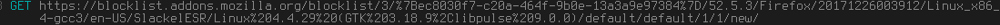

Mozilla Firefox
Mozilla Firefox is one of the most popular and longest existing browsers. Its developers have earned it a reputation for being a "privacy and security-based browser, respecting the user" — but is it justified, or just marketing? In fact, over the years they have made several anti-privacy (and generally anti-user) decisions, but this article will focus exclusively on spying. Version tested: 52.5.0, with the default settings. Program used for testing requests: Mitmproxy.
Spyware Level: High
After following the mitigation guide, this software is Not Spyware.
It sends a lot of different data very often (some of which could uniquely identify you). All the "services" that it provides, such as its default search engines and Pocket, are anti-privacy. The rating isn't higher because at least you can turn off or modify most of it, though it often requires diving deep into about:config.
Phoning home
Whenever you start Firefox, it makes this request:

In fact, it makes it every time you go to a website, and even a few times in a row for a single website. So Firefox "phones home" all the time, without your knowledge. Can be disabled ONLY in about:config. But, since you've already started Firefox, it will make this request at least once.
Automatic connections to some websites you've visited, including their trackers
Websites you visit most often are added to the New Tab panel. When you then open a new tab, Firefox will sometimes make requests to the sites in there, including some of their trackers. I haven't determined how it works yet. Sometimes it doesn't make the requests at all; other times you end up with hundreds of images, scripts, trackers, etc. loaded simply because you opened a new tab (without visiting any website explicitly). Was NOT able to find a way to disable this, even in about:config.
Firefox tracks users with Google Analytics
Firefox has been integrated with the spyware platform called "Google Analytics"[1]. Firefox has been confirmed to now send analytics to Google. According to a Firefox developer the spyware in Firefox is "extremely useful to us and we have already weighed the cost/benefit of using tracking." and that Firefox will not remove Google Analytics support entirely. Firefox's position on privacy is made very clear with this quote:
"Wanted to address your position though: We don't give the "data directly to Google". See the discussion here: https://bugzilla.mozilla.org/show_bug.cgi?id=858839. The short version is: tl;dr: We now have an option to opt-out of Google doing anything with the data that Google Analytics collections on Mozilla websites. GA tracking is anonymous and at the aggregate level and we use it to improve the experience of our websites. We are collecting aggregate and non-identifiable data in numbers to ensure our development/UX changes are met well. We can respect privacy and still have analytics; in fact Mozilla's aim is for an experience that values user privacy and usability (I'd say Apple also wants UX that fits that mold, as an example). We need some data, anonymized and aggregated, to do this."
The best takeaway to this is that Mozilla wants to pretend that including spyware in their program is somehow not a breach of privacy, and that Firefox could possibly be respecting user privacy while simultaneously collecting data on users and sending it to Google. It's strongly suggested reading the GitHub thread and the further anti-privacy statements the Mozilla employee makes while defending the spyware features in Firefox. It's very dangerous to assert that there is somehow a middle ground between respecting user privacy and datamining the user.
"Safe" Browsing?
Allegedly used to protect you from "phishing" websites, but in the end, it makes a bunch of requests to Google every 30 minutes (according to Mozilla), including a POST request with your Firefox version and a unique, persistent, hidden cookie. Since whenever the current URL matches an entry in the cached local blacklist a request is made to Google servers, ostensibly to test whether that website is still on the master online blacklist, it allows Google to monitor specific websites transparently to the user by putting the URLs of interest on the local but not the online blacklist. Can be disabled ONLY in about:config.

Firefox Health Report
From the horse's mouth: "For example, FHR sends data to Mozilla on things like: operating system, PC/Mac, number of processors, Firefox version, the number and type of add-ons. The data collected by FHR is tied to a Document ID that corresponds to a browser installation (explained above in question #4) so that the data can be correlated across a limited window of time."[2] Also, according to Mozilla, new versions of Firefox will also collect telemetry data by default. Can be disabled through the GUI.
Anti-privacy search engines by default
Old versions of Firefox had Google as the default search engine, which is obviously anti-privacy. For example, from their privacy policy: "When you use our services or view content provided by Google, we automatically collect and store certain information in server logs. This includes: details of how you used our service, such as your search queries.". Then, it was Yahoo, which isn't better: "The Yahoo Search History tool allows you to see what you've searched for in the past. ". So it saves all your searches. And deleting does nothing: "Even if you clear your past searches or turn the Search History tool off, Yahoo still collects and stores search user log data when you use Yahoo Search technology." Firefox 57 is going back to Google again. If they really cared about your privacy, the default search engine would be StartPage (which gives the same results as Google, but anonymized) or DuckDuckGo. Can be changed through the GUI.
Pocket — a privacy nightmare
Firefox has a Pocket button in its navigation bar, which allows you to "save any article, video or page from Firefox" and "View in Pocket on any device, any time." Let's see how it looks in terms of privacy — quoting from Pocket's privacy policy[3]: "In addition to the information that you provide to us when you register for a user account, we collect information about the URLs, titles and content of the web pages and other information you save to Pocket." So everything you conveniently put in "your" Pocket is being stored (of course, otherwise Pocket wouldn't work). "The types of information we collect includes your browser type, device type, device id, time zone, language, and other information related to the manner in which you access the Pocket Technologies. " So anytime you view a file in "your" Pocket, they know everything about the device you used to do it. "We may also use "pixel tags," "web beacons," "clear GIFs" or similar means (individually or collectively "Pixel Tags") in connection with emails that we send to our users in order to collect usage data." So, they are acting like any old tracking website, even in ways that have nothing to do with their functionality. "We may also share your device ID with third parties in connection with advertising campaigns. " And they work with advertisers too! Describing all of Pocket's violations would take up this whole article. There are similar services with better privacy policies, but in the end, they still store the things you view in "the cloud". A real privacy-based browser would not be integrated with them by default. Can be disabled in about:config[8]
Automatic updates
Not that bad compared to all of the above, I guess — but still installs something without your consent, with possible new privacy nightmares in there. There is no excuse to at least not make "Check for updates, but let me choose whether to install them" the default — it would still give the security benefit, but not take control away from the user. Can be disabled through the GUI.
Other issues
Firefox also sometimes makes a request to "self-repair.mozilla.org" which looks like this:

It includes "optimizelyEndUserID" which probably means it uniquely identifies you. Can be disabled ONLY in about:config.[7]
It also makes this request every time you open the default home page:

The number after the Firefox version is, again, uniquely identifying[4] Can be disabled ONLY in about:config.
Firefox has a file with list of blocked addons that it considers "malicious" and it makes a request to update it every day (even if you don't have any addons installed).
The request includes a uniquely identifying browser installation ID. Can be disabled ONLY in about:config.
Firefox phones home about almost every single interaction you have with its UI
Firefox will send information about almost every basic operation that you do back to Mozilla. This is tagged with a unique client ID and an ID for your current session, and any relevant information related to this action. By default, the following uses of the UI are reported to Mozilla[5]:
- Performing a search
- Clicking a top site item
- Deleting an item from history
- Blocking a site
- Bookmarking a link
- Removing a bookmark from a link
- Opening a link in a new window
- Opening a link in a new private window
- Opening the new tab preferences pane
- Closing the new tab preferences pane
- Acknowledging a section disclaimer
- Adding or editing a new TopSite
- Requesting a custom screenshot preview
- Session end
- Impression stats
- Click/block/save_to_pocket ping
- Addon initialization failure
- Domain affinity calculation
Essentially, while this feature doesn't broadcast your search history to Mozilla, it proves an incredibly detailed walkthrough of exactly how you use Firefox's user interface. This can be disabled and is an opt-out spyware feature. You can disable it through the GUI as described here: Share data with Mozilla to help improve Firefox [web.archive.org] [archive.fo] [ghostarchive.org]
Whitelisting trackers
Mozilla has a feature called "Enhanced Tracking Protection". This feature's claimed goal is to protect the user from being tracked. This would be nice if Mozilla didn't whitelist a massive list of domains[9].
Mitigating Firefox Spyware
This review is also accompanied by a page about how to configure Firefox to be more privacy respecting, and links to other projects that have been created to solve this problem. You can read about that here. These are some of the flags in about:config mentioned earlier in the article, and the values that they should be set too:
| Spyware Feature | about:config flag | about:config value | Source |
|---|---|---|---|
| Phoning home | network.captive-portal-service.enabled | False | Turn off captive portal [archive.li] [web.archive.org] |
| Self-Repair | browser.selfsupport.url | "" | How can I stop firefox from constantly connecting to self-repair.mozillia.org [archive.is] [ghostarchive.org] |
| pocket.enabled | False | Disable Pocket in Firefox [archive.is] [ghostarchive.org] |